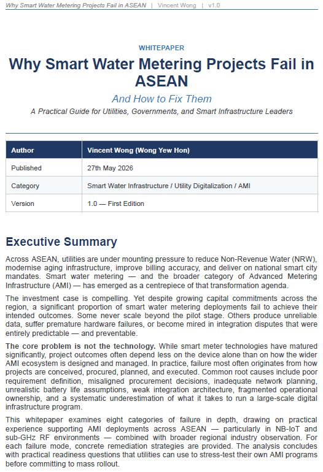

A collection of whitepapers and industry analysis focused on Smart Metering, AMI, Smart Water, and Utility Technology.

A whitepaper examining eight common causes of Smart Water Metering project failure and practical recommendations for utility leaders, AMI project teams, and technology providers.
Read More →Additional whitepapers will be added over time.